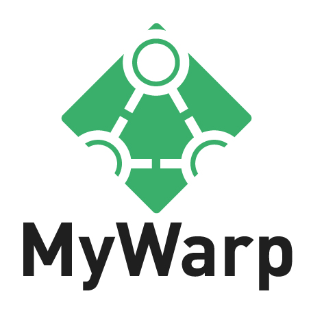

Social and dynamic warps for Minecraft
MyWarp creates a unique warp network on your server that lets players interact dynamically with each other by creating and sharing warps. It provides a wide range of highly customizable features so it can easily be configured to match exactly the needs of your server.
Features
- Create private and public warps,
- Invite and uninvite players or permission-groups to private warps,
- List and search warps a player can use,
- Use automatic popularity ranking and name-matching to find exactly the warp you are looking for,
- Use creation-limits to regulate how many warps of a type a user can make,
- Create warmups or cooldowns to regulate warp-usage,
- Regulate access to warps based on worlds,
- Create warp signs and connect them to buttons or levers,
- Charge users for using, creating, listing or any other warp-related task,
- Translate every message the plugin outputs, either so it fits your servers theme of even into a whole new language,
- Show warps on Dynmap using the built-in support,
- Open Source, available under the GNU General Public License v3.
Links
Special thanks to CloudBees for hosting our continuous integration server via their FOSS program.